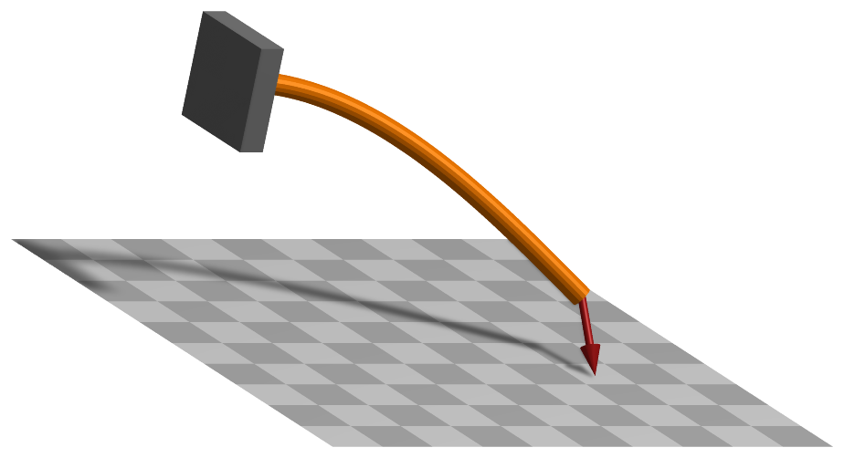

ObjectBeamGeometricallyExact
A 3D geometrically exact (shear deformable) beam finite element with two 3D rigid body nodes, interpolated on SE(3). The localPosition \(x\) of the beam ranges from \(-L/2\) (at node 0) to \(L/2\) (at node 1); the axial coordinate is \(x\) (first coordinate) and the cross section is spanned by the local \(y\)- and \(z\)-axes.


Interface
Python names:
ObjectBeamGeometricallyExactorBeam3D, andVBeam3Dfor its visualizationNodes it takes: NodeRigidBodyEP, NodeRigidBodyRxyz, NodeRigidBodyRotVecLG, NodePointSlope12, NodePointSlope23, NodePointGround
Body markers that can be placed on it: MarkerBodyMass, MarkerBodyPosition, MarkerBodyRigid
Parameters
The parameters of the item; in a dictionary, its type is ‘BeamGeometricallyExact’:
name |
type |
size |
default |
description |
|---|---|---|---|---|
name |
String |
‘’ |
objects’s unique name |
|
nodeNumbers |
NodeIndex2 |
2 |
[invalid (-1), invalid (-1)] |
two node numbers for beam element |
length |
PReal |
0. |
(symbol: \(L\)) [SI:m] reference length of beam; such that the total volume (e.g. for volume load) gives \(\rho A L\); must be positive; must be given: the default is only a placeholder |
|
sectionData |
BeamSection |
BeamSection() |
data as given by exudyn.BeamSection(), defining inertial, stiffness and damping parameters of beam section. |
|
visualization |
VObjectBeamGeometricallyExact |
parameters for visualization of item |
Renamed parameters, still taken with a DeprecationWarning: physicsLength (deprecated since 1.12.258, removed in 2031): use length.
Visualization parameters
The parameters of VObjectBeamGeometricallyExact, given as visualization:
name |
type |
size |
default |
description |
|---|---|---|---|---|
show |
Bool |
True |
set true, if item is shown in visualization and false if it is not shown; geometry is defined by sectionGeometry |
|
sectionGeometry |
BeamSectionGeometry |
BeamSectionGeometry() |
defines cross section shape used for visualization and contact |
|
color |
Float4 |
4 |
[-1.,-1.,-1.,-1.] |
RGBA color of the object; if R==-1, use default color |
Drawing
Drawn as all finite elements; its sectionGeometry extruded along the axis, of bodies.beams.axialTiling segments; without section geometry a line, colored along it in a contour plot.
Settings beyond those of all finite elements: bodies.beams.axialTiling.
Output variables
Available as OutputVariableType in sensors, Get...Output() and other functions:
output variable |
symbol |
description |
|---|---|---|
Position |
global position vector of local axis (1) and cross section (2) position |
|
Displacement |
global displacement vector of local axis (1) and cross section (2) position |
|
Velocity |
global velocity vector of local axis (1) and cross section (2) position |
|
Rotation |
Tait-Bryan angles of the frame of the cross section at the local position |
|
RotationMatrix |
rotation matrix of the frame of the cross section at the local position, in vector form (stored in row-major order) |
|
AngularVelocity |
global angular velocity of the cross section at the local position, interpolated linearly between the nodes |
|
AngularVelocityLocal |
angular velocity of the cross section at the local position, in the frame of the cross section |
|
StrainLocal |
6 strain components \([\varepsilon_{xx}, 0, 0, 0, \gamma_{xz}, \gamma_{xy}]\tp\) of the beam axis, axial strain and the two shear strains; constant in the element |
|
CurvatureLocal |
local curvature vector \([\kappa_x, \kappa_y, \kappa_z]\tp\), torsion and the two bending curvatures, relative to the reference configuration; constant in the element |
|
ForceLocal |
local section force \([N, Q_y, Q_z]\tp\), the normal force and the two shear forces; constant in the element |
|
TorqueLocal |
local section moment \([M_x, M_y, M_z]\tp\), the torsional moment and the two bending moments; constant in the element |
|
KineticEnergy |
\(T = \frac{1}{2} \dot\qv\tp \Mm\, \dot\qv\) |
kinetic energy from the mass matrix of the current state and the velocities of the nodes; current configuration only; localPosition must be \([0,0,0]\) |
PotentialEnergy |
\(V = \frac{L}{2}\, \teps\tp \Km\, \teps\) |
elastic energy of the strains \(\teps = (\hv - \hv_0)/L\), constant in the element, with the diagonal section stiffness \(\Km\); localPosition must be \([0,0,0]\) |
Detailed description
A shear deformable 3D beam after Simo and Vu-Quoc Simo1988, formulated on the special Euclidean group SE(3) after Sonneville et al. Sonneville2014: the element interpolates the relative motion of its two nodes as a screw motion, which represents a constant curvature, twist, shear and extension exactly.
Nodes and coordinates
Two 3D rigid body nodes - NodeRigidBodyEP, NodeRigidBodyRxyz or NodeRigidBodyRotVecLG - each with the
position \(\pv_i\) of the beam axis and the rotation \(\Rot_i\) of the cross section, whose local \(x\)-axis is the
axis of the beam and whose local \(y\)- and \(z\)-axes span the cross section. The local axial coordinate is
\(x \in [-L/2,\, L/2]\) with \(L\) = length; node 0 is at \(x = -L/2\).
Kinematics and interpolation
With the homogeneous transformations \(\Hm_i = (\Rot_i, \pv_i)\) of the nodes, the relative motion of node 1 with respect to node 0 is the logarithm on SE(3),
three components of displacement and three of rotation, in the frame of node 0. The frame of the cross section at \(x\) is
which gives the position Position and the rotation RotationMatrix of a local position \((x, y, z)\).
Strains and elastic forces
The strains are constant in the element,
axial strain, the two shear strains, torsion and the two bending curvatures, where \(\hv_0\) is the relative
motion of the nodes in their reference configuration: the element is stress-free there, so a curved or
twisted beam is modelled by placing and orienting its nodes. The section forces and moments are
\(\Km \teps\) with \(\Km = \mathrm{diag}(EA,\, GA_y,\, GA_z,\, GJ,\, EI_y,\, EI_z)\), the diagonal of the stiffness matrix
of sectionData. The generalized forces of node \(i\) are
with \(\Tm_i\) the inverse tangent operator of SE(3) that maps the variation of node \(i\) to the one of \(\hv\). The Jacobian of the elastic forces is complete: it contains the derivatives of \(\Rot_i\), \(\Gm_{local,i}\) and \(\Tm_i\).
Mass matrix and inertia terms
The velocity field of the element interpolates the nodal velocities and angular velocities linearly,
\(\vv(x) = S_0 \vv_0 + S_1 \vv_1\) and \(\tomega(x) = S_0 \tomega_0 + S_1 \tomega_1\), with
\(S_0 = (L/2 - x)/L\) and \(S_1 = (L/2 + x)/L\). The mass matrix is the one of this velocity field:
\(\rho A L [1/3,\ 1/6;\ 1/6,\ 1/3]\) for the positions, and for the rotations
\(\Gm_i\tp \int S_i S_j\, \Rot(x) \Jm \Rot(x)\tp dx\ \Gm_j\) with the cross section inertia \(\Jm\) per unit length,
integrated with two Gauss points; the quadratic velocity vector is formed the same way. A rigid motion is
therefore represented exactly by any number of elements. exu.special.beams.geometricallyExactLumpedMass = True
switches to the lumped mass of the nodes, for comparison.
Marker interfaces
MarkerBodyPosition, MarkerBodyRigid and MarkerBodyMass attach at a local position; their Jacobians
follow the velocity field above. A distributed load through MarkerBodyMass acts on the two nodes with half
the mass of the element each.
Output variables
Position, rotation and velocities at a local position follow the interpolation above. StrainLocal,
CurvatureLocal, ForceLocal and TorqueLocal are constant in the element - the mean of a field that varies
along it under a transverse force - and converge with the mesh.
Limitations
Only the diagonal of the section stiffness matrix is used, and a sectionData with other entries is
rejected; the element has no damping. The derivatives of the inertia terms with respect to the coordinates
are not part of the Jacobian. Test models: geometricallyExactBeamCurvedTest.py (the 45-degree bend),
geometricallyExactBeamRightAngleFrame.py (lateral buckling), geometricallyExactBeamElbowCantilever.py
(the dynamic right-angle cantilever) and geometricallyExactBeamOutputTest.py.
Mini example
#a cantilever of four 3D geometrically exact beam elements on Euler parameter nodes, loaded at the tip
L = 1; nElements = 4; EI = 100; GA = 1e4; F = -0.1
section = exu.BeamSection()
section.stiffnessMatrix = np.diag([1e5, GA, GA, 80, EI, EI]) #EA, GA_y, GA_z, GJ, EI_y, EI_z
section.inertia = np.diag([0.02, 0.01, 0.01])
section.massPerLength = 1
nodes = [mbs.AddNode(NodeRigidBodyEP(referenceCoordinates=[L*i/nElements,0,0]+eulerParameters0))
for i in range(nElements+1)]
for i in range(nElements):
mbs.AddObject(ObjectBeamGeometricallyExact(nodeNumbers=[nodes[i],nodes[i+1]], length=L/nElements,
sectionData=section))
mbs.AddObject(GenericJoint(markerNumbers=[mbs.AddMarker(MarkerNodeRigid(nodeNumber=nGround)),
mbs.AddMarker(MarkerNodeRigid(nodeNumber=nodes[0]))])) #clamped
mbs.AddLoad(LoadForceVector(markerNumber=mbs.AddMarker(MarkerNodePosition(nodeNumber=nodes[-1])), loadVector=[0,F,0]))
mbs.Assemble()
mbs.SolveStatic()
#Timoshenko beam: F*L^3/(3*EI) + F*L/GA = -0.3433e-3, approached with more elements
exu.sys['testResult'] = mbs.GetNodeOutput(nodes[-1], exu.OutputVariableType.Displacement)[1]*1000
Relevant Examples (Ex) and TestModels (TM) with weblink to github: energiesFlexibleBodiesTest.py (TM), energiesTest.py (TM), flexiblePendulumBeamComparison.py (TM), geometricallyExactBeamCurvedTest.py (TM), geometricallyExactBeamElbowCantilever.py (TM), geometricallyExactBeamJacobianTest.py (TM), geometricallyExactBeamMarkerTest.py (TM), geometricallyExactBeamMassTest.py (TM), geometricallyExactBeamOutputTest.py (TM), geometricallyExactBeamRightAngleFrame.py (TM), geometricallyExactBeamTest.py (TM), rightAngleFrame.py (TM)